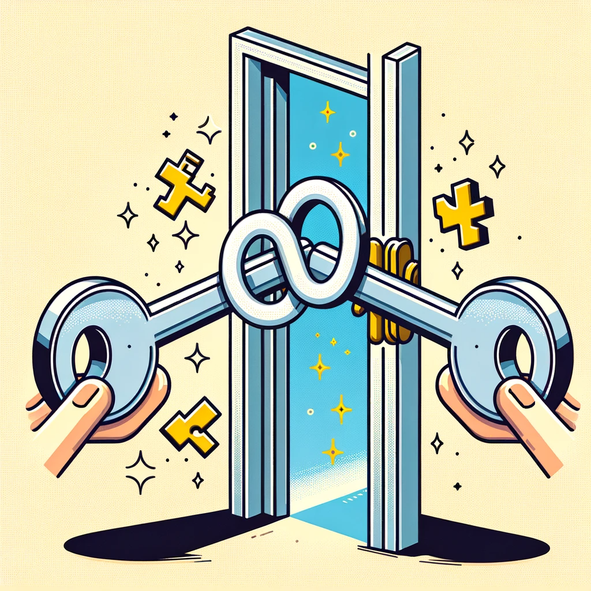
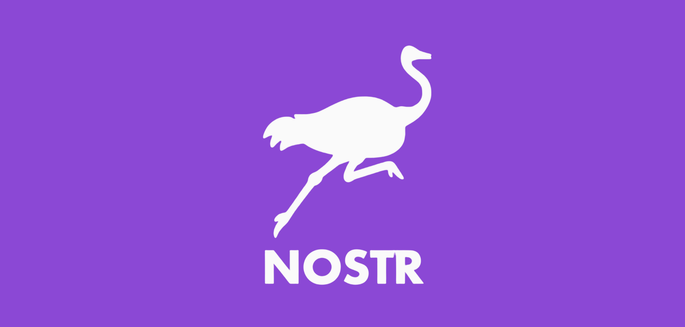

What is Nostr?
Nostr stands for Notes and Other Stuff Transmitted by Relays. It is a protocol that envisions a new kind of social network — one that is open, decentralized, and resilient. Designed with simplicity in mind, Nostr utilizes JSON-based event objects and elliptic-curve cryptography to provide a platform where messages can be freely exchanged without censorship.
Understanding Nostr's JSON Structure
Nostr events are JSON objects that represent the fundamental data unit within the protocol. Each event contains several fields:
- id: A unique identifier for the event.
- kind: An integer representing the type of event.
- pubkey: The public key of the user who created the event.
- created_at: A timestamp for when the event was created.
- content: The content of the event (e.g., a message).
- tags: An array of tags for additional context or metadata.
- sig: A cryptographic signature to verify the event's integrity and authenticity.
This standardized structure ensures that events are easily created, propagated, and verified across the Nostr network.
Core Principles of Nostr
Cryptography in Nostr
Nostr employs elliptic-curve cryptography to secure communications. Each user has a pair of keys: a public key that can be shared with anyone, and a private key that remains confidential. Information is encrypted and signatures are verified to ensure data integrity and authenticity. This cryptographic foundation guarantees that only the intended recipients can decipher messages and validates the origin of each message.
Decentralization and User Control
Nostr's decentralized nature means no central entity has control over the network. Users are in command of their data, choosing which relays to publish to and subscribe from. This distribution of power fosters a resilient network immune to single points of failure and censorship.
Principle of Relays
Relays in Nostr function as servers that pass messages but don't control the network. They are interchangeable and operate based on the principle of redundancy, ensuring that if one relay goes down, others are available to take its place, maintaining the network's robustness.
Learn More About Nostr
Getting Started with Nostr
Engaging with Nostr begins with choosing a client, which serves as your interface for the network. From there, you can select relays to connect to and start publishing or subscribing to content. As an open protocol, anyone can build upon Nostr, creating diverse applications and services.

Go to Nostr Github!